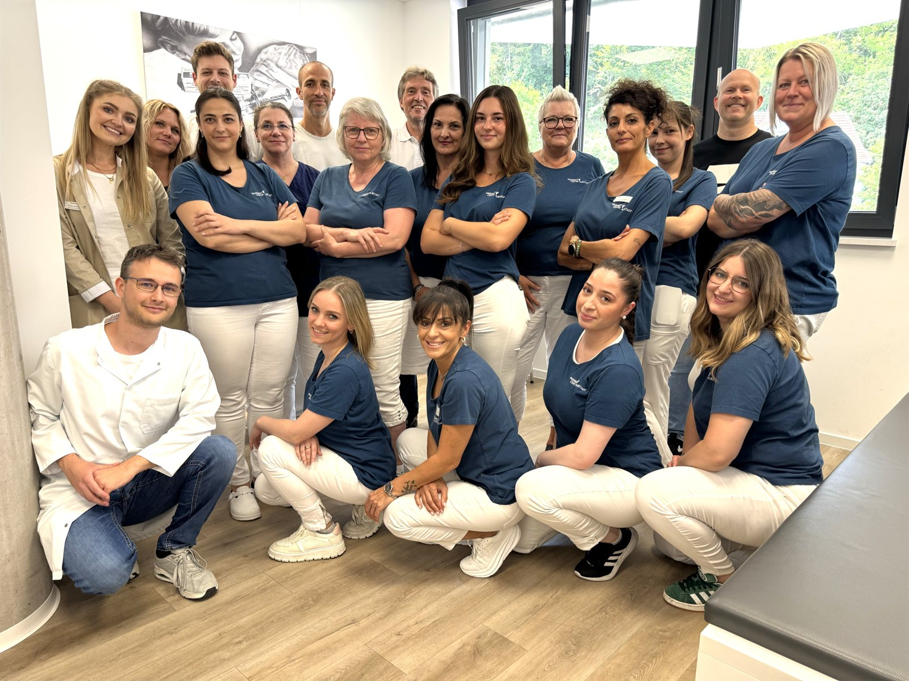
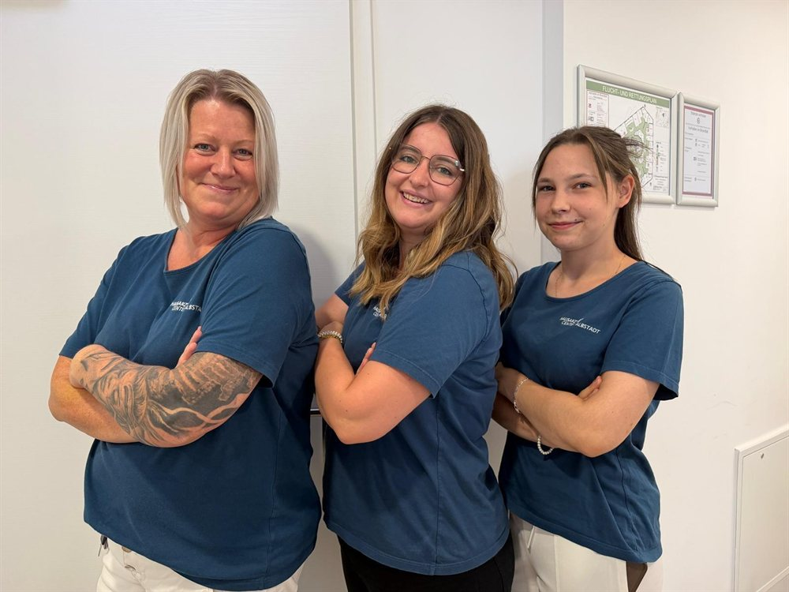
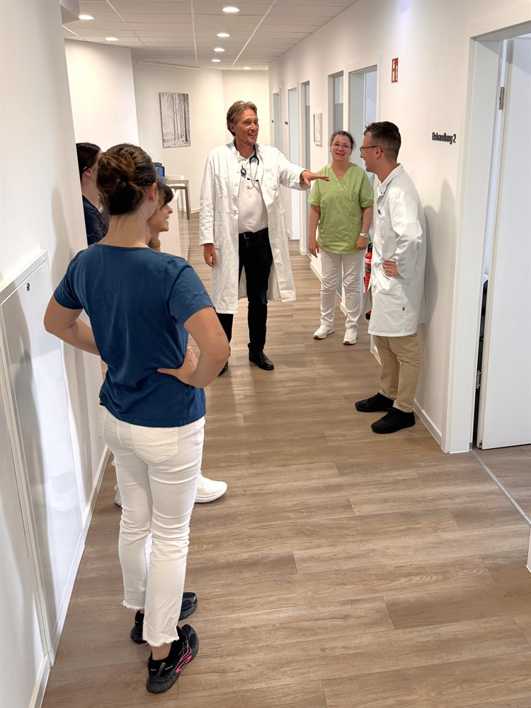
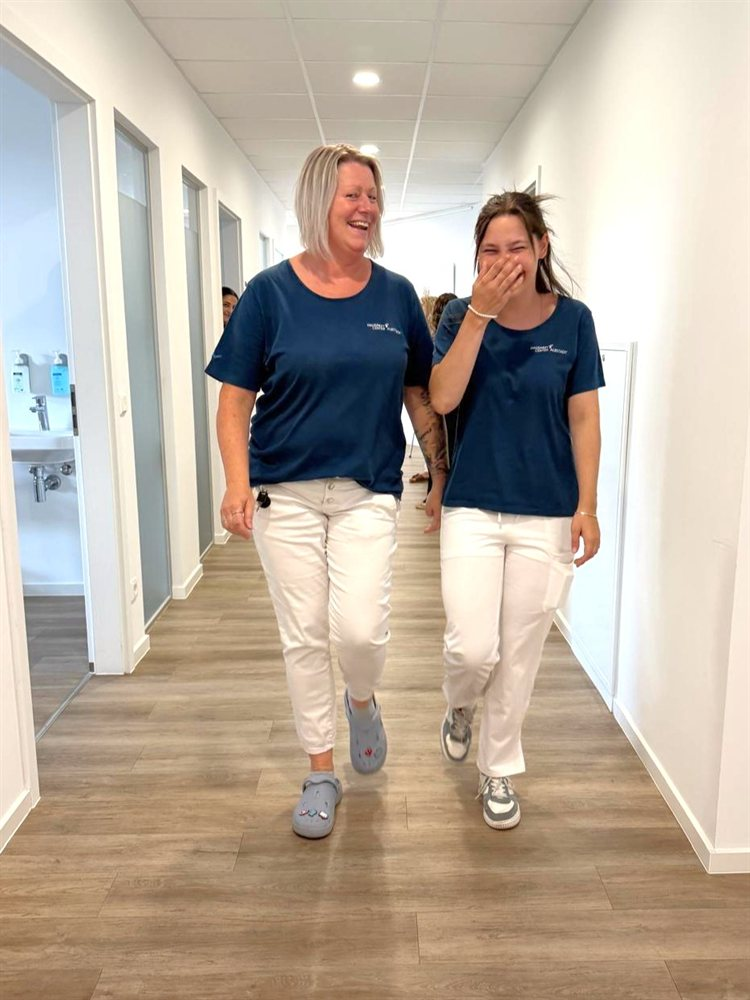

Facharzt für Allgemeinmedizin (w/m/d)
Vollzeit oder Teilzeit · Albstadt-Ebingen / Zweigniederlassungen
Jetzt bewerbenWerden Sie Teil eines starken Teams – ärztliche Nahversorgung mit Herz auf der Schwäbischen Alb.
Für uns steht die Versorgung unserer Patientinnen und Patienten an erster Stelle, und unser Antrieb ist eine exzellente, medizinisch ganzheitliche Nahversorgung. Unsere Ziele erreichen wir in einem starken Team, in dem jede Mitarbeiterin und jeder Mitarbeiter als Individuum geschätzt und fachlich wie persönlich gefördert wird.
Bei uns praktizieren Ärztinnen und Ärzte bereits in dritter Generation – mit Leidenschaft und immer auf dem neuesten Stand von Medizin und Technik. Für unsere Praxis in Albstadt-Ebingen und unsere Zweigniederlassungen suchen wir engagierte Ärztinnen und Ärzte, die mit uns gemeinsam zu einer exzellenten Nahversorgung beitragen wollen.




Zwischen den Sprechstunden bleibt bei uns Zeit für ein Lachen.
Aktuell suchen wir Verstärkung für unser ärztliches Team.
Vollzeit oder Teilzeit · Albstadt-Ebingen / Zweigniederlassungen
Jetzt bewerbenin der hausärztlichen Versorgung · Vollzeit oder Teilzeit
Jetzt bewerbenVollzeit oder Teilzeit · Albstadt-Ebingen / Zweigniederlassungen
Das können Sie von uns erwarten.
Unkompliziert und schnell – in vier Schritten zu uns.
Schicken Sie uns Ihre Unterlagen per E-Mail – ein kurzes Anschreiben genügt.
Wir melden uns zeitnah bei Ihnen und stimmen einen Termin ab.
Wir lernen uns persönlich kennen – gern auch bei einer Hospitation.
Passt alles, freuen wir uns auf die Zusammenarbeit.
Wir stehen zu unserem „Ländle", zu den Menschen und zu unserer Stadt. Albstadt ist eine mittelgroße Stadt auf der Schwäbischen Alb mit sehr guter Infrastruktur. Für den Ausgleich zum Arbeitsalltag bietet die Region zahlreiche Freizeitaktivitäten, und über die Bahn ist eine gute Anbindung an weitere Städte gegeben.
Wir freuen uns auf Ihre Bewerbungsunterlagen.
Ihr Ansprechpartner: Eduard Warth
Hausarztcenter Albstadt · Europaplatz 3, 72458 Albstadt
Tel. 07431 9334213
E-Mail: e.warth@hausarztcenter-albstadt.de